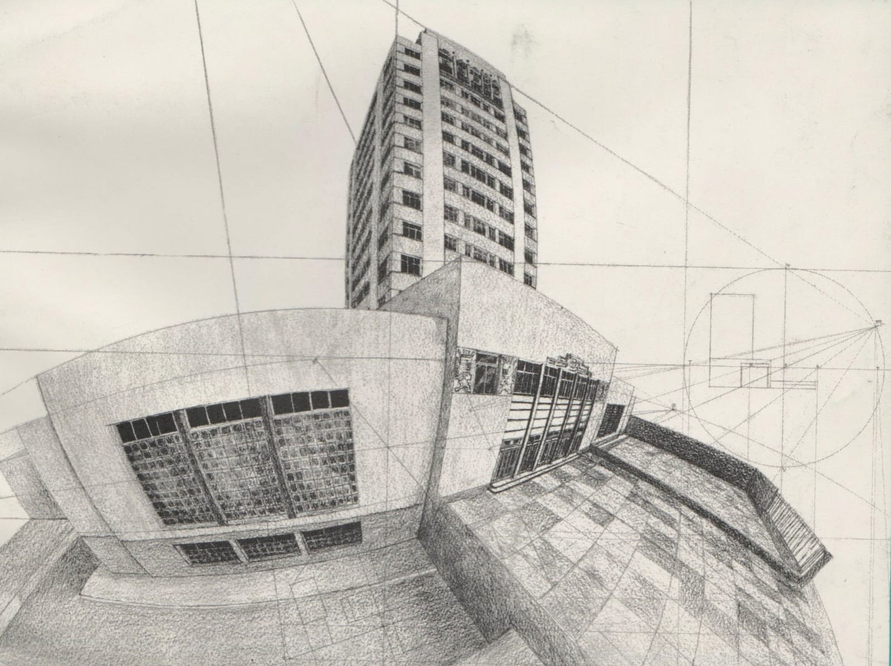

PERSPECTIVA CIRCULAR O CURVILÍNEA
Representación arquitectónica mediante líneas curvas que permiten una visión más amplia y dinámica del espacio.



Ejercicio de representación arquitectónica mediante técnica de tinta, donde se aplicaron conocimientos de perspectiva, manejo de línea, profundidad, proporción y expresión gráfica para representar diferentes edificios y espacios arquitectónicos.
Representación donde las líneas principales convergen hacia un único punto de fuga, generando profundidad y sensación espacial.
Representación arquitectónica utilizando dos puntos de fuga para mostrar diferentes caras y volúmenes del edificio.
Representación arquitectónica mediante líneas curvas que permiten una visión más amplia y dinámica del espacio.
